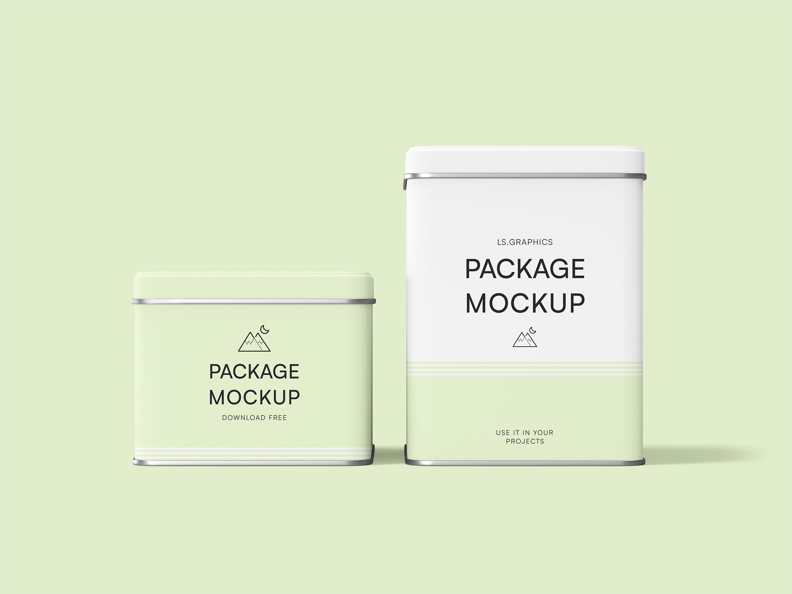

Platform Strategy
Webflow vs WordPress Guide
Compare platform tradeoffs, governance, publishing speed, and long-term maintenance costs before committing.
Open guide30 Years of Web Design • Now offering AI & Custom App Development
Resources Hub
This resource hub helps business teams find clear answers, practical frameworks, and strategic guidance for digital growth. Use it to compare options, understand best practices, and make confident decisions about web design, SEO, and AI-enabled operations.
Trusted insights from 30+ years of building digital systems.
Explore clear, practical guides that help you compare options, plan smarter, and make more confident decisions about your website, marketing, and growth strategy.
Compare platform tradeoffs, governance, publishing speed, and long-term maintenance costs before committing.
Open guideUse a practical step-by-step checklist to reduce redesign risk and align UX, SEO, and conversion goals.
Open guideUnderstand pricing ranges, delivery scope, and budget planning for business websites in the New Mexico market.
Open guideIdentify realistic AI opportunities that improve team output, reduce manual work, and support measurable growth.
Open guideExplore timely insights, implementation notes, and strategic updates from our team.

A practical framework for increasing qualified local traffic with stronger intent alignment and trust cues.
Read articleLearn the page architecture and schema fundamentals that help content surface in answer-first experiences.
Read article
Signals that your current site is holding back growth and how to scope redesign work around outcomes.
Read articleA measured approach to workflow automation that improves reliability without adding technical complexity.
Read articleReview dedicated FAQ collections that answer common business questions across digital strategy, web platforms, and AI-led visibility.
Next Step
If you're sorting through options for your website, growth strategy, or AI implementation, we can help you turn that research into a practical plan.
No-pressure consult. Clear recommendations and a practical next step.